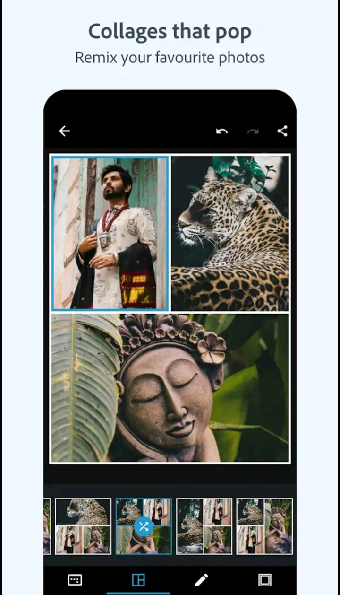

One of the popular applications used by Photoshop, photography, graphic designers, digital artists, and various other disciplines.Originally Photoshop Launched in 1988, Photoshop has evolved from a simple photo retouching tool into a powerful multifunctional software for creating the most sophisticated digital art, editing images, and changing the design of everything from the graphics interface to the rendering interface. It has provided a lot of facilities to the professional people and it has been called as one of the best add-on Photoshop.
Photoshop enables basic adjustments such as cropping, resizing, rotating and adjusting exposure, cropping, and saturation, along with features like Condenser Cool and Color Blessing for a smoother, clearer, more natural look to enhance the image. Support Planing Brushes for Protect and Beauty Adjustments Tools such as Colors Stichting and ClowVail transform facial features to smooth skin as quickly as possible and remove blemishes to allow the entire face to be reshaped. And it restores old photos, can repair cracked or damaged areas and revive faded colors to make photos look better.Photoshop Let Systems allows users to stack images and text and effects on top of each other without affecting other parts of the project, and to freely manipulate and manipulate elements using layer masks to enable non-destructive editing. which allows users to hide or show certain parts of a layer.Photoshop offers various session tools such as Lasso Matching Wards and Coating Sessions to lock specific parts of an image so that the tool can easily edit or split the session without affecting the rest of the image. Powerful tool that automatically detects Asia, selects content with a color, and even makes more precise edits by fine-tuning hair or matching different personality types within it Can render a picture better.
1988
24 Oct 2024/16.3.250